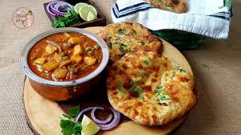

Amritsari Kulcha

Amritsari Kulcha is a popular North Indian dish, especially from the city of Amritsar in the state of Punjab.
Ingredients
- maida
- yogurt
- baking powder
- baking soda
- salt
- suger
- oil
- water as needed by dough
steps to make
- Mix all-purpose flour, baking powder, baking soda, salt, sugar, and oil.
Add yogurt and water to form a soft dough.
Let it rest for 2 hours.
- mix boiled mashed potatoes, grated paneer, chopped onion, green chilies, coriander leaves, chaat masala, and salt.
- Divide dough into balls, roll one into a disc.Place filling, seal edges, and roll into a thick disc
- Preheat oven with a pizza stone or use a hot tawa on the stovetop.
Bake or cook until it puffs up and gets golden brown spots.
- Brush with butter or ghee.Serve hot with chole or your favorite curry